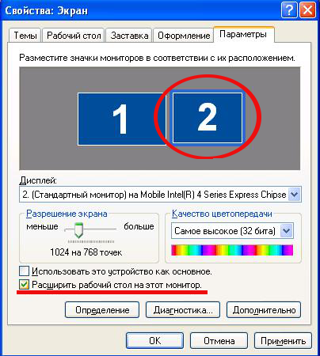

5.4 Настройки двойного экрана
Для правильной работы Софт Проектора, требуется настройка вторичного экрана/монитора. Софт Проектор показывает слова на мониторе 2. Если вторичным является монитор 1, а первичным монитор 2, то понадобится специальная программа.
Windows XP
Windows Vista
Windows 7
Другие операционные системы
Windows XP:
1. На рабочем столе компьютера щелкните правой кнопкой мыши и выберите "Свойства"
2. Выберите закладку "Параметры".
3. Вы должны увидеть изображение двух мониторов. Если показан только один монитор, то либо ваш компьютер
не поддерживает второй монитор, либо не установлен необходимый драйвер.
4. Выберите монитор 2
5. Установите нужное разрешение
6. Поставьте отметку на опции "Расширить рабочий стол на этот монитор".
Это позволит работать с двумя экранами: один на мониторе компьютера, а другой на проекторе.

Windows Vista:
1. На рабочем столе компьютера щелкните правой кнопкой мыши и выберите "Персонализировать"
2. Выберите "Свойства монитора"
3. Вы должны увидеть изображение двух мониторов. Если показан только один монитор, то либо ваш компьютер
не поддерживает второй монитор, либо не установлен необходимый драйвер.
4. Выберите монитор 2
5. Установите нужное разрешение
6. Поставьте отметку на опции "Расширьте мой рабочий стол на этот монитор".
Это позволит работать с двумя экранами: один на мониторе компьютера, а другой на проекторе

Windows 7:
1. На рабочем столе компьютера щелкните правой кнопкой мыши и выберите "Разрешение экрана"
2. Вы должны увидеть изображение двух мониторов. Если показан только один монитор, то либо ваш компьютер
не поддерживает второй монитор, либо не установлен необходимый драйвер.
3. Выберите монитор 2
4. Установите нужное разрешение
5. Поставьте отметку на опции "Несколько мониторов:" "Расширить мониторы"

Другие операционные системы:
Софт Проектор успешно тестировался на Линуксе и Макинтоше.
Поскольку имеется множество других операционных систем, обратитесь к справочнику нужной системы о том, как пользоваться двумя мониторами.